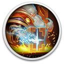
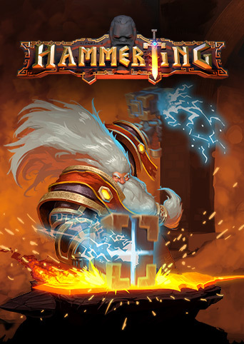

 Hammerting
Details
|  | |
| Playtime | Not Played |
| Last Activity | Never |
| Added | 25.10.2024 23:53:09 |
| Modified | 25.10.2024 23:54:04 |
| Completion Status | Not Played |
| Library | Gog |
| Source | GOG |
| Platform | PC (Windows) |
| Release Date | 26.10.2020 |
| Community Score | 57 |
| Critic Score | 68 |
| User Score | |
| Genre | Adventure Indie RPG Simulation Strategy |
| Developer | Warpzone Studios |
| Publisher | Team17 Digital LTD. |
| Feature | Co-Op Family Sharing Multiplayer Online Co-Op Single Player Trading Cards |
| Links | Official Steam GOG Epic Discord Twitch |
| Tag | [HLTB] 20 to 30 hours Budowanie bazy Eksploracyjna Fantasy Generowanie proceduralne Menedżerska Niezależne Strategiczna Symulacyjna Wytwarzanie Zarządzanie Zarządzanie zasobami |
Description
Hammerting to pionowy symulator krasnoludzkiej kolonii górniczej z elementami RPG.
Zarządzaj klanem barwnych krasnoludów, rozwiń ogromną operację górniczą, twórz legendarne miecze i przemierzaj coraz większe głębiny, gdzie czeka Cię chwała, bogactwo... i niebezpieczeństwo.
Podczas gdy na powierzchni toczy się wojna, krasnoludy zobowiązują się kopać w ziemi i używać mistrzowskich umiejętności rzemieślniczych, aby produkować i dostarczać zaopatrzenie dla sojuszników. Zaczynasz skromnie z garścią krasnoludów, którzy muszą szybko rozpocząć działalność. W miarę postępów Twój niewielki klan rozrośnie się, a jego kunszt i umiejętności staną się sławne na wszystkie Górne Krainy.
Przez rzemiosło do zwycięstwa
Sojusznicy na powierzchni będą mieć rozmaite prośby. Krasnoludy mogą zostać poproszone o wykucie srebrnych mieczy do walki z armią wampirów. Z okazji swojej koronacji elfia księżniczka zażyczy sobie legendarnej, złotej, wysadzanej diamentami korony boskiej władzy +3.
Każda dostawa na rzecz sojuszników na powierzchni to krok na drodze do zwycięstwa nad złem.
W miarę rozwoju umiejętności Twoich krasnoludów i rozrostu bazy będziesz automatyzować pracę poprzez budowę przenośników taśmowych i wind.
Barwne postacie

Czy pochodzący z rodziny szlacheckiej Åglöf i wychowana w skromnych warunkach Vargskreva będą w stanie ze sobą współpracować? Czy Twój poszukiwacz boi się ciemności? Czy główny rzemieślnik za bardzo lubuje się w ale? Aby odnieść sukces, musisz poznać zarówno mocne, jak i słabe strony swoich krasnoludów.
Każdy krasnolud ma unikalne parametry, pochodzenie, atuty, zdolności, wyposażenie i ruchy kształtowane przez wydarzenia w jego życiu.
Utalentowani rzemieślnicy

Każdy może wykuć żelazny miecz, ale tylko krasnoludy potrafią przekonać smoka z Jaskini Kryształowej, aby sprzedał im oddech plazmowy, zasilić nim Kuźnię Zagłady Andthril i użyć jej do wykucia... żelaznego miecza +2.
Z każdym uderzeniem młota o kowadło uzdolniony krasnolud ma większe szanse na krytyczny sukces zapewniający lepsze parametry przedmiotu.
Żyjąca jaskinia

Krasnoludy nie przepadają za swobodnym spadkiem. Dlatego budują wszelkiej maści windy. Przykładowo członkowie Klanu Stalbrwistych wolą tradycyjny, prosty szyb wyposażony w żurawia z 300-metrową liną, do której przywiązany jest kubeł, w którym zjeżdża się prosto na dół. Kubeł jest rzecz jasna wyposażony w barek z ale.
Przy odrobinie wytrwałości dokopiesz się najpotężniejszych materiałów, najgorętszej magmy i najrzadszych skarbów. Ale uwaga: im głębiej, tym niebezpieczniej.
Znalezienie najszybszej i najbezpieczniejszej drogi na dół i z powrotem stanowi nie lada wyzwanie, ale w zadaniu tym pomoże Ci szereg innowacji krasnoludów.
Możesz pompować do pieców cechującą się realistyczną fizyką lawę, warzyć piwo, rzucać pochodnie w dół szybów, aby oświetlić otchłań, i dużo więcej.
Tworzenie modów
Chcesz odcisnąć własne piętno na Hammerting? Bez obaw, możesz do woli modyfikować grę!
Dołączony do gry zestaw SDK pozwala tworzyć gotowe modyfikacje oraz dodawać lub zastępować dowolne aktywa.
Nie musisz wcale ograniczać się do „danych” takich jak tekstury. Możesz pisać skrypty w języku C++ i tworzyć nowe, złożone systemy.
Zarządzaj klanem barwnych krasnoludów, rozwiń ogromną operację górniczą, twórz legendarne miecze i przemierzaj coraz większe głębiny, gdzie czeka Cię chwała, bogactwo... i niebezpieczeństwo.
Podczas gdy na powierzchni toczy się wojna, krasnoludy zobowiązują się kopać w ziemi i używać mistrzowskich umiejętności rzemieślniczych, aby produkować i dostarczać zaopatrzenie dla sojuszników. Zaczynasz skromnie z garścią krasnoludów, którzy muszą szybko rozpocząć działalność. W miarę postępów Twój niewielki klan rozrośnie się, a jego kunszt i umiejętności staną się sławne na wszystkie Górne Krainy.
Przez rzemiosło do zwycięstwa
Sojusznicy na powierzchni będą mieć rozmaite prośby. Krasnoludy mogą zostać poproszone o wykucie srebrnych mieczy do walki z armią wampirów. Z okazji swojej koronacji elfia księżniczka zażyczy sobie legendarnej, złotej, wysadzanej diamentami korony boskiej władzy +3.
Każda dostawa na rzecz sojuszników na powierzchni to krok na drodze do zwycięstwa nad złem.
W miarę rozwoju umiejętności Twoich krasnoludów i rozrostu bazy będziesz automatyzować pracę poprzez budowę przenośników taśmowych i wind.
Barwne postacie
Czy pochodzący z rodziny szlacheckiej Åglöf i wychowana w skromnych warunkach Vargskreva będą w stanie ze sobą współpracować? Czy Twój poszukiwacz boi się ciemności? Czy główny rzemieślnik za bardzo lubuje się w ale? Aby odnieść sukces, musisz poznać zarówno mocne, jak i słabe strony swoich krasnoludów.
Każdy krasnolud ma unikalne parametry, pochodzenie, atuty, zdolności, wyposażenie i ruchy kształtowane przez wydarzenia w jego życiu.
Utalentowani rzemieślnicy
Każdy może wykuć żelazny miecz, ale tylko krasnoludy potrafią przekonać smoka z Jaskini Kryształowej, aby sprzedał im oddech plazmowy, zasilić nim Kuźnię Zagłady Andthril i użyć jej do wykucia... żelaznego miecza +2.
Z każdym uderzeniem młota o kowadło uzdolniony krasnolud ma większe szanse na krytyczny sukces zapewniający lepsze parametry przedmiotu.
Żyjąca jaskinia
Krasnoludy nie przepadają za swobodnym spadkiem. Dlatego budują wszelkiej maści windy. Przykładowo członkowie Klanu Stalbrwistych wolą tradycyjny, prosty szyb wyposażony w żurawia z 300-metrową liną, do której przywiązany jest kubeł, w którym zjeżdża się prosto na dół. Kubeł jest rzecz jasna wyposażony w barek z ale.
Przy odrobinie wytrwałości dokopiesz się najpotężniejszych materiałów, najgorętszej magmy i najrzadszych skarbów. Ale uwaga: im głębiej, tym niebezpieczniej.
Znalezienie najszybszej i najbezpieczniejszej drogi na dół i z powrotem stanowi nie lada wyzwanie, ale w zadaniu tym pomoże Ci szereg innowacji krasnoludów.
Możesz pompować do pieców cechującą się realistyczną fizyką lawę, warzyć piwo, rzucać pochodnie w dół szybów, aby oświetlić otchłań, i dużo więcej.
Tworzenie modów
Chcesz odcisnąć własne piętno na Hammerting? Bez obaw, możesz do woli modyfikować grę!
Dołączony do gry zestaw SDK pozwala tworzyć gotowe modyfikacje oraz dodawać lub zastępować dowolne aktywa.
Nie musisz wcale ograniczać się do „danych” takich jak tekstury. Możesz pisać skrypty w języku C++ i tworzyć nowe, złożone systemy.